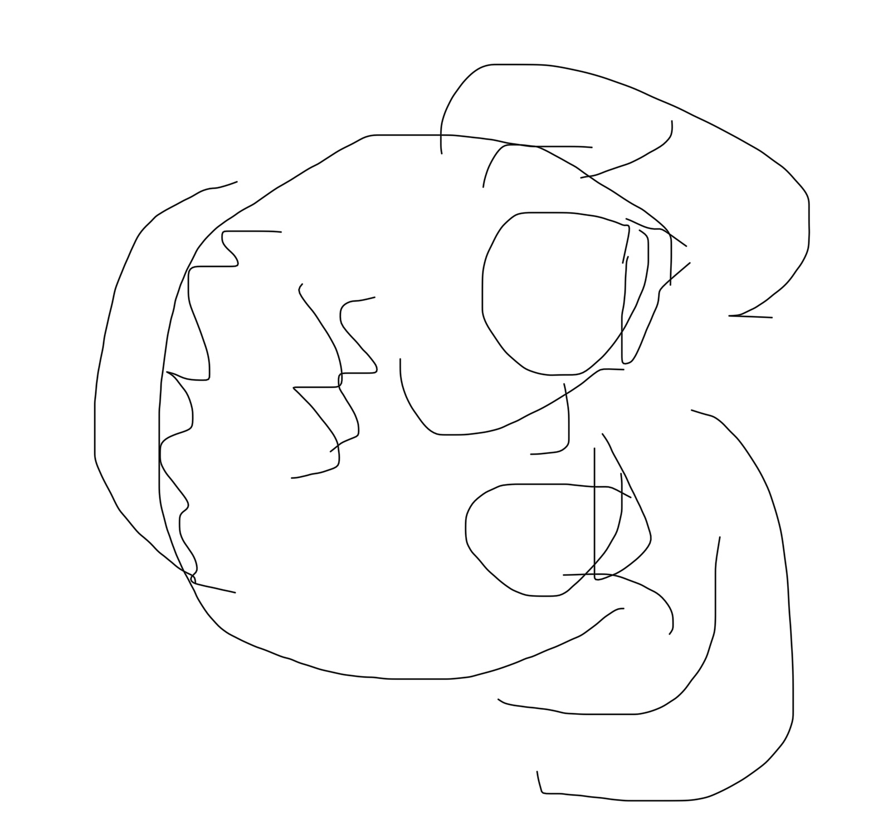

2nd-year CS PhD Student
Brown University
I am a PhD student in Computer Science at Brown University, where I am fortunate to be advised by Professor Ellie Pavlick.
My research focuses on interpretability and human-model comparison.
I believe for us to attribute cognitive properties (m knows p, m understands English, m is conscious, and etc.) to computational models, two components are required:
(a) operationalized definitions of those cognitive properties, and (b) sufficient knowledge of the inner workings of the computational models of interest.
While the first component has been the subject of lengthy debates in philosophy of mind / epistemology and may remain unresolved,
the second component offers a direction, interpretability, where concrete answers are achievable.